(2025) Lecture 3
Presenter: Unknown
Note Taker: Unknown
1 Isospin Symmetry and Hadron Structure
Thanks everyone who found the room. Apologies for changing it all the time – we are now fixed. From now on this room is booked and we will continue using it for the next 10 lectures. Today we have lecture number three.
Lecture plan:
- Kinematics and cross sections – start with classical scattering of electron and proton.
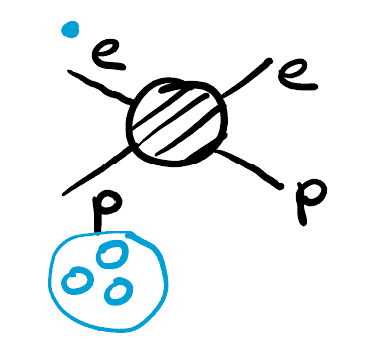
Form factors in scattering – relation to hadron properties, charge distribution, magnetic moment.
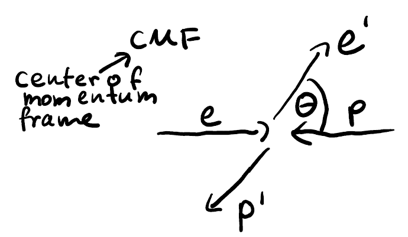
Form factors in the quark model.
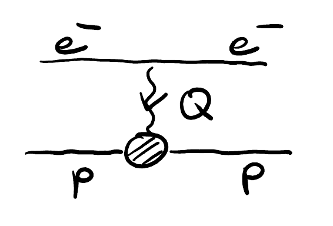
Symmetry considerations: flavor symmetry and spin symmetry.
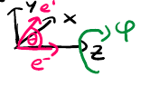
Proton and neutron spin–flavor wave functions and computation of magnetic moments in the quark model.
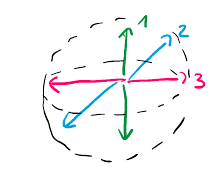
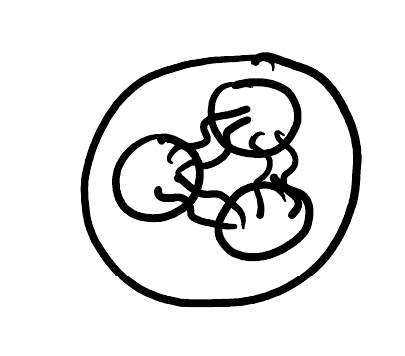
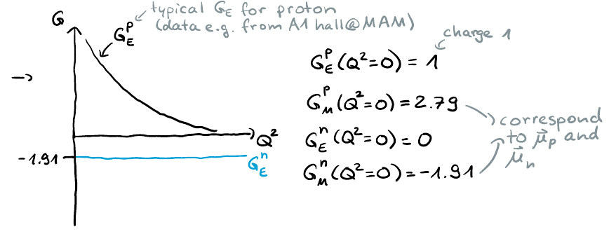
1.0.1 Recap questions
Q1 (easy): What is the isospin of the D^+ meson and the D^0 meson?
Q2 (hard, but clear after today): What is the isospin of the \Xi_{cc} baryon and its quark content?
Bonus question: J/\psi (spin 1, parity - ) decays to two identical vector particles (each 1^- ). What is the orbital angular momentum between the two particles to obtain the correct parity?
1.0.2 Isospin symmetry
Isospin symmetry is based on the up and down quarks – the two light quarks. The wave function has two components: \psi_{\text{up}} and \psi_{\text{down}} , which form an SU(2) doublet with isospin 1/2 . The two projections correspond to I_3 = +1/2 (up) and I_3 = -1/2 (down).
Counting the number of light (u/d) quarks immediately gives the isospin: a single light quark has isospin 1/2 ; two light quarks couple to total isospin 1 or 0 .
Why not extend isospin to heavier quarks? In principle, one could define an SU(2) between charm and strange, with charm as the upper component and strange as the lower component. The mathematics would be the same. However, the Lagrangian does not obey this symmetry because charm and strange have very different masses – thus it is not a good symmetry of nature.
The reason u and d form a multiplet is their nearly equal masses (~6 MeV vs ~4 MeV, effectively zero at hadronic scales). The strange quark mass (~100 MeV) is still small compared to the QCD scale (~1 GeV), so one can approximate SU(3) flavor symmetry by including the strange quark. This leads to the hypercharge–isospin diagram.
If one also includes the charm quark (pretending masses are equal for c, s, u, d), every meson would be mapped to a point in a three-dimensional space with axes: isospin, strangeness, and charmness.
1.0.3 Answer to question 1: D^+ and D^0
The D^+ meson ( c\bar{d} ) and D^0 meson ( c\bar{u} ) differ only by the light antiquark. They belong to the same isospin doublet. The isospin partner of D^+ is obtained by replacing \bar{d} with \bar{u} , yielding D^0 .
| Meson | Quark content | I_3 | Total isospin I |
|---|---|---|---|
| D^+ | c\bar{d} | +1/2 | 1/2 |
| D^0 | c\bar{u} | -1/2 | 1/2 |
Q: Would the same hold for anti‑d and anti‑u? Would you have three other options? A: Yes – charge conjugation symmetry is even better than isospin symmetry (broken only by tiny CP violation). The antiparticles are:
- D^- ( \bar{c}d ) from D^+
- \bar{D}^0 ( \bar{c}u ) from D^0
| Antiparticle | Quark content |
|---|---|
| D^- | \bar{c}d |
| \bar{D}^0 | \bar{c}u |
The deviation between D and anti‑ D is tiny, while the deviation between D^+ and D^0 is larger due to isospin breaking.
1.0.4 Answer to question 2: \Xi_{cc} baryon
The \Xi_{cc} baryon contains two charm quarks and one light quark. Its isospin partner is obtained by replacing the light quark with the other light quark.
| Baryon | Quark content | I_3 | Total isospin I |
|---|---|---|---|
| \Xi_{cc}^{++} | ccu | +1/2 | 1/2 |
| \Xi_{cc}^{+} | ccd | -1/2 | 1/2 |
These form an isospin doublet with total isospin 1/2 . The naming follows from the charge.
1.0.5 Isospin breaking
Particles within the same isospin multiplet have the same properties at the coupling level. However, the slight mass difference between u and d can lead to huge deviations in observable quantities – for example, strong isospin breaking in certain decay modes of D^+ and D^0 (as seen in homework).
Isospin symmetry is broken weakly in the Lagrangian (small quark mass difference and electromagnetic effects), but sometimes its consequences are dramatic in the observables.
2 Adding Two Spin-1 Particles: Allowed J^P States
Two vector mesons (each spin 1) can combine to give total spin S = 0, 1, 2
— analogous to two sticks of length 1 m giving a total length of 0, 1, or 2 m.
When there is no orbital angular momentum ( L = 0 ), the parity is P = (-1)^L = + , and the total angular momentum J equals the total spin S . Hence we obtain states with J^P = 0^+, 1^+, 2^+ . This is the S‑wave configuration.
Now we include orbital angular momentum L . For a given L , J ranges from |L-S| to L+S , and parity is P = (-1)^L .
For S=1 the L=0 (original) states are 0^+,1^+,2^+ ; for S=2 the L=0 (original) states are 1^+,2^+,3^+ (these are used as the starting points when adding orbital angular momentum).
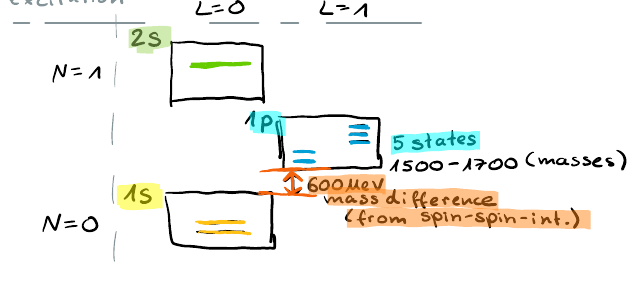
The following table summarises the allowed J^P states for L=1,2,3 :
| L (Wave) | P | S | Allowed J | J^P states |
|---|---|---|---|---|
| 1 (P) | - | 0 | 1 | 1^- |
| 1 (P) | - | 1 | 0,1,2 | 0^-,1^-,2^- |
| 1 (P) | - | 2 | 1,2,3 | 1^-,2^-,3^- |
| 2 (D) | + | 0 | 2 | 2^+ |
| 2 (D) | + | 1 | 1,2,3 | 1^+,2^+,3^+ |
| 2 (D) | + | 2 | 0,1,2,3,4 | 0^+,1^+,2^+,3^+,4^+ |
| 3 (F) | - | 0 | 3 | 3^- |
| 3 (F) | - | 1 | 2,3,4 | 2^-,3^-,4^- |
| 3 (F) | - | 2 | 1,2,3,4,5 | 1^-,2^-,3^-,4^-,5^- |
For identical bosons (e.g., two identical vector mesons) there is an additional restriction: L+S must be even.
Knowing how to combine any spins with any orbital angular momentum, you can determine all allowed total quantum numbers J^P . For any given initial state, you construct a table like this and identify which combinations are capable of decaying. The skill is simply to fill the table using J = |L-S|, \dots, L+S and P = (-1)^L .
Now we consider which combinations can appear in the decay of a resonance into two vector mesons. For concreteness, take a resonance with J^P = 1^- . From the table we find the following (L,S) pairs that yield 1^- :
| L | S | J^P |
|---|---|---|
| 1 | 0 | 1^- |
| 1 | 1 | 1^- |
| 1 | 2 | 1^- |
| 3 | 2 | 1^- |
Thus there are four possible combinations for non‑identical particles.
3 Probing Hadron Structure via Electron Scattering
To understand the structure of hadrons, you need a standard, well-understood probe—a well-understood current insertion into hadrons. (see Figure 6) The electromagnetic interaction serves as this probe: we scatter electrons off protons and observe the reaction in the phase space of kinematic variables.
On the electron side, the process is simple: the electron is point-like, interacts with the proton’s electromagnetic field, and scatters.
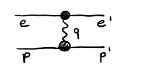
3.1 Kinematic variables
For a 2-to-2 reaction, two independent variables are needed. Common choices are the Mandelstam invariants:
s = (p_e + p_p)^2 = (E_{\text{tot}}, 0)^2
t = (p_e' - p_e)^2 = m_e^2 + m_e^2 - 2E_e^{*}E_e + 2|\vec{p}_e^{*}|^2 \cos\Theta (see Figure 2)
In the center-of-momentum frame, all quantities can be expressed in terms of s . For example, from s = (p_e + p_p)^2 and \sqrt{s} = E_e + E_p , one manipulates the scalar product p_p \cdot p_e to obtain:
m_p^2 = s + m_e^2 - 2\sqrt{s} E_e
which then gives E_e = \frac{s + m_e^2 - m_p^2}{2\sqrt{s}} . The momentum follows from |\vec{p}_e| = \sqrt{E_e^2 - m_e^2} .
The breakup momentum and the phase space function appear here, but the students may not have covered them in the exercises.
One more thing for kinematics: E_{\text{tot}} is fixed by the beams, and the scattering angle is what we measure. Knowing E_{\text{tot}} gives s , and knowing the scattering angle gives t through the equation above.
In elastic scattering, a common variable is Q^2 = -t . The transferred momentum Q^2 is always space-like (negative) for elastic scattering, so Q^2 > 0 .
3.2 Small vs. large momentum transfer
| Regime | Scattering angle | What the probe feels |
|---|---|---|
| Small Q^2 | Small angles | The overall charge of the proton — its charge density and radius. (see Figure 1) The electron sees the bare proton’s outer field. |
| Large Q^2 | Large angles | The internal structure — the charge of the quarks and their properties inside the proton. (see Figure 3) The electron starts “feeling” the quarks. |
This is the idea behind deep inelastic scattering. Large accelerator facilities have been built to study it. The analogy: it is like a large cucumber being smashed with the electromagnetic current.
3.3 The Electron‑Ion Collider (EIC)
The U.S. hadron physics program for the next 10 years promises to be the Electron‑Ion Collider. Instead of a proton target, heavier ions will be used, and electrons will scatter to study quantum chromodynamics.
In this process, there is much to understand about the proton. The proton is not a simple object; quarks and gluons interact and move. What we understand more or less is how the quarks are distributed in terms of the fraction of the proton momentum they carry. What we do not understand is the perpendicular fluctuation — what happens off the axis in transferred momentum. That is one of the questions people want to address.
3.4 Quantities characterized by small scattering angles (see Figure 5) (see Figure 11)
Two quantities are characterized by small scattering angles: the charge radius of the proton and its magnetic moment.
A good approximation for the charge distribution of the proton is a Gaussian:
\rho(r) \sim e^{-r/r_0}
where r_0 is the charge radius. The magnetic moment
\vec{\mu} = \frac{e}{2m}\vec{S}
characterizes how the particle interacts with a magnetic field. The interaction Hamiltonian is
H_{\text{int}} = -\vec{\mu} \cdot \vec{B}
For example, when a hydrogen atom is placed in a magnetic field, the energy levels split because of the magnetic moment and charge radius.
4 Phase Space and the Cross Section
Let’s relate quantum process observables to experimental quantities via the cross section. The cross section is another key equation in this course: how to compute the differential cross section in terms of the matrix element of the reaction.
The square of the matrix element gives the probability of a reaction happening at a certain kinematic point. The cross section, integrated over the whole kinematic domain, is given by the sum over matrix elements and the number of phase space configurations.
The differential cross section is
d\sigma = \frac{1}{J} \overline{|\mathcal{M}|^2} d\phi,
where the flux factor J = 2E_1 2E_2 |v_1 - v_2| normalizes the wave packets of the colliding particles. The flux factor is the simplest part.
The phase space can be thought of as the number of configurations in which the reaction can happen. To sum the probabilities, you need to sum over all possible configurations. For spins, the configurations are discrete indices — a super intuitive concept. But when you deal with the kinematic manifold, it is less intuitive because the space is continuous.
An example is the scattering angle \theta , a continuous variable that defines the final state. To calculate the total cross section, you must sum over all possible \theta , which becomes an integral. That is what phase space takes care of: it sums possible configurations. Phase space is the continuous version of counting configurations.
The Lorentz-invariant differential phase space for n particles in the final state is
d\phi_n = \prod_{i=1}^n \frac{d^3 p_i}{(2\pi)^3 2E_i} (2\pi)^4 \delta^4\!\left(p_0 - \sum p_i\right).
Every four-vector that appears here should be on mass shell: p_i^2 = m_i^2 . The energy-momentum conservation is enforced by the delta function. Phase space is easy for two-body, trickier for three-body, and complicated for higher multiplicities, but phase space integrals are always standard.
4.1 Counting variables for two-body phase space
| Property | Count / Description |
|---|---|
| Initial degrees of freedom | 6 (3 momentum components for each of 2 particles) |
| Constraints from \delta^4 | 4 (energy + 3 momentum) |
| Remaining degrees of freedom | 2 |
| Final independent variables | \cos\Theta,\ \varphi (spherical angles) |
| Resulting phase space | d\phi_2 = \displaystyle\frac{1}{8\pi}\frac{\lambda^{1/2}(s, m_1^2, m_2^2)}{s} \frac{d\cos\Theta\, d\varphi}{4\pi} |
The two-body phase space formula is analytic and contains many properties. I really recommend everyone to do this derivation three times: do it once, put it aside, do it a second time, do it a third time, and then you understand it.
The two differentials d\cos\Theta and d\varphi represent the spherical angles. In a 2\to 2 scattering, there is one variable that determines the scattering angle \Theta . The azimuthal angle \varphi describes rotation around the beam axis. If the particles are unpolarized, the squared matrix element does not depend on \varphi , so the \varphi integral is trivial and gives 2\pi .
What remains is \cos\Theta , which is related to Q^2 and gives sensitivity to the structure of the particle. The kinematic factor \frac{\lambda^{1/2}}{s} tells you the number of configurations for a given energy. At low beam energy, the number of configurations is small. Non-relativistically, you would simply count configurations — each outgoing particle direction gives 4\pi possibilities.
Relativistically, the phase space factor \frac{\lambda^{1/2}}{s} suppresses the phase space near threshold. It vanishes when \sqrt{s} = m_1 + m_2 , so the phase space is very small close to threshold. That is not surprising.
Thoughts on future learning How will the mechanism of uploading knowledge into students’ brains work? I think it will be something like a ChatGPT that trains you. To understand something, you need to apply knowledge repeatedly in different situations. First you receive information, like a lecture, then immediately a quiz. Then, in a gaming format, you solve problems — for example, you are given a three-particle phase space and you must derive everything. You ask and answer questions: what is the high energy behavior of the phase space? In a playful way, you figure things out, like Duolingo for hadron physics. After three hours you discover it. The next day you get a reminder to do it again. After a few sessions, you know nuclear physics. I think that is how it will work. We will have a Duolingo for every course. We try to do this with the homework for you. Please work on them. This is your chance.
Now let me quickly tell you what the matrix element is.
The matrix element \mathcal{M} is a key input to reactions. If we have a theory of the interaction, we can derive it. If we do not have a theory, as often in hadron physics, we use general principles to construct the matrix element. For electromagnetic processes, we have QED and QCD. We know how to write an expression that, when squared and summed over final states and averaged over initial states, gives a mathematical form that we can compare with experiment.
The matrix element depends on the kinematic variables. In a 2-to-2 process, the phase space is a function of two variables: \cos\Theta and \varphi . For unpolarized scattering, the matrix element does not depend on \varphi , so it becomes a function of \cos\Theta only. It also depends on the total energy s , but that is fixed by the beam energy.
The matrix element is defined in quantum field theory as a complex function, the probability amplitude from the scattering matrix. It is the expectation value of the interaction operator between asymptotic initial and final states. Squaring and summing gives a real probability. \mathcal{M} is a complex function of the Mandelstam variables s and t . For fixed s , it is a complex function of t alone.
5 Perturbation Theory and Form Factors in Electron-Proton Scattering
In field theory, scattering is approached through perturbation theory, expanding order by order in the number of interactions. Each interaction of an electron with the current gives a factor of 1/137 , which is e^2 = \alpha , the electromagnetic fine-structure constant. That is why you can perform an expansion series: a photon can hit an electron once, or twice, etc. Already the first term in the series gives a good bulk value of the total cross section.
Therefore we consider the first order in perturbation theory for electromagnetic processes. Each order in perturbation theory has a corresponding Feynman diagram. I draw the diagram, put an arrow, make a notation, and then immediately write the corresponding mathematical expression. For electron-proton scattering at leading order, the amplitude is:
i\mathcal{M} = \underbrace{\bar{u}_{e}' \gamma^\mu u_{e}}_{\text{electron}} \frac{g_{\mu\nu}}{q^{2}} \underbrace{\left[\bar{u}_{p}' \left( \gamma^\nu F_{1} + \frac{i\sigma^{\nu\rho} q_{\rho}}{2M} F_{2} \right) u_{p} \right]}_{\text{proton (most general version)}} . (see Figure 9) (see Figure 10)
The functions F_{1}(q^{2}) and F_{2}(q^{2}) are the two form factors. They characterize the internal structure of the proton and are not given by field theory.
| Proton model | F_1(q^2) | F_2(q^2) |
|---|---|---|
| Point-like | Constant | 0 |
| Extended (real proton) | q^2 ‑dependent (measured in experiment) | q^2 ‑dependent (non‑zero) |
Because the proton is not point-like, F_2 is non‑zero and F_1 is not constant. These form factors must be introduced and measured in experiments.
6 Rosenbluth Formula and Proton Form Factors
The amplitude for elastic electron-proton scattering is (see Figure 2) (see Figure 3) (see Figure 9)
i\mathcal{M}= \bar{u}_e'\gamma^\mu u_e \frac{g_{\mu\nu}}{q^2} \bar{u}_p'\left(\gamma^\nu F_1+\frac{i\sigma^{\nu\rho}q_\rho}{2M}F_2\right) u_p .
Here U denotes a spinor and \Gamma a gamma matrix. The term involving \sigma is \frac{i\sigma^{\nu\rho}q_\rho}{2M}F_2 . It is important to identify the dimensionality of every object and verify that the expression has the expected dimensionality. All objects are tensors, so all indices must match. For example, the Lorentz index \mu in the electron current \bar{u}_e'\gamma^\mu u_e is contracted with the \mu index in the photon propagator g_{\mu\nu}/q^2 . U is a spinor with spinor indices; it is contracted with a 4\times 4 gamma matrix, yielding a scalar in spinor indices but a vector in Lorentz indices. The F_i are scalar functions.
The derivation of the cross section proceeds by squaring the amplitude and performing a spin summation, using well‑known field‑theory techniques to eliminate the spinors. (The intermediate steps are given in Halzen & Martin and are omitted here.) The final result is the Rosenbluth formula:
\frac{d\sigma}{d\Omega}= \frac{\alpha^2}{4E_1^2\sin^4\frac{\Theta}{2}}\frac{E_3}{E_1}\left( \frac{G_E^2+\tau G_M^2}{1+\tau}\cos^2\frac{\Theta}{2}+2\tau G_M^2\sin^2\frac{\Theta}{2} \right), \qquad \tau=\frac{Q^2}{4m_p^2}.
E_1 is the initial electron energy, E_3 the final electron energy. The factor 1/\sin^4(\Theta/2) originates from 1/Q^4 , because Q is proportional to \sin(\Theta/2) .
This leads to a divergence at small angles. In the forward direction the cross section behaves as 1/\theta^4 , which is not integrable and requires regularization.
For convenience, the form factors F_1 and F_2 are replaced by the Sachs form factors G_E and G_M :
G_E = F_1 - \frac{Q^2}{4m_p^2}F_2, \qquad G_M = F_1 + F_2.
These yield a simpler expression for the cross section.
The Q dependence of G_E and G_M is the Fourier dual of the spatial coordinate. Knowing the form factors as a function of Q allows one to interpret them as the spatial distribution:
F(\vec{q}^{\,2})=\int e^{i\vec{q}\cdot\vec{x}} f(\vec{x})\,d^3x.
An exponential spatial distribution leads to a dipole parameterization in Q^2 , as seen in the homework. By measuring the Q dependence (from experiments or lattice calculations) one extracts the parameters of the spatial distribution.
A very active question is the charge radius of the proton. Many experiments with different technologies, as well as lattice QCD calculations, aim to extract it. (see Figure 5) On the lattice one computes the Q dependence from first principles, then performs a Fourier transform to obtain the spatial distribution and thereby the charge radius. (see Figure 11)
At Q^2=0 the form factors take the fixed values:
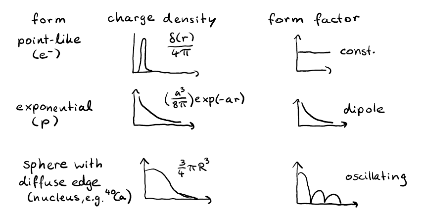
| Form factor | Proton | Neutron |
|---|---|---|
| G_E | 1 | 0 |
| G_M | 2.79 | –1.91 |
7 Magnetic Moments and the Quark Model
7.1 Magnetic Form Factor and Magnetic Moment
The magnetic form factor G_M at Q=0 gives the hadron’s magnetic moment. When Q=0 , the expression reduces to an integral over all space of the magnetization distribution, yielding the total magnetic moment.
The magnetic moment is the leading-order term in the expansion; higher-order corrections (next-to-leading, next-to-next-to-leading, etc.) arise from the electron side and are well understood. On the proton side, the general form factor decomposition involves F_1 and F_2 , but computing them order by order is difficult. Instead, F_1 and F_2 are parameterized to account for the unknown internal structure (the “blob” inside the hadron).
7.2 Interaction Hamiltonian and Gyromagnetic Factor
In quantum mechanics, the interaction Hamiltonian for a magnetic dipole in a magnetic field is
H_{\text{int}} = -\vec{\mu}\cdot\vec{B},\qquad \vec{\mu} = \frac{e}{2m}\vec{S},
where \vec{S} is the spin operator. For a spin‑ 1/2 particle, \vec{S} has eigenvalues \pm\frac{1}{2} . The magnetic moment is often written in terms of the gyromagnetic factor g :
\mu = g\frac{e}{4m},
with g=2 for a point‑like Dirac particle. For a neutral particle ( e=0 ), the magnetic moment vanishes in the point‑like case.
7.3 Experimental Values (see Figure 7)
The measured magnetic moments of the proton and neutron are:
\begin{aligned} \mu_p &= 2.793\,\mu_N,\\ \mu_n &= -1.913\,\mu_N, \end{aligned}
where the nuclear magneton is \mu_N = \frac{e}{4m_N} . The neutron’s non‑zero moment and the proton’s deviation from the Dirac value 2 provide clear evidence that these particles are not point‑like.
The ratio is
\frac{\mu_p}{\mu_n} \approx -1.46 \approx -\frac{3}{2}.
This ratio emerges naturally from the flavor–spin wave function of the proton in the quark model.
7.4 Quark‑Model Expressions
Using the quark model, the proton’s magnetic moment can be expressed in terms of the up and down quark magnetic moments:
\mu_p = \frac{4}{3}\mu_u - \frac{1}{3}\mu_d,\qquad \mu_n = \frac{4}{3}\mu_d - \frac{1}{3}\mu_u,
with
\mu_u = \frac{2}{3}\frac{e\hbar}{2m_u},\qquad \mu_d = -\frac{1}{3}\frac{e\hbar}{2m_d}.
The ratio \mu_p/\mu_n \approx -3/2 follows from these relations; the derivation will be postponed to the next lecture.
7.5 Foundations of the Quark Model (see Figure 6) (see Figure 8)
The strong interaction is confined to a small scale inside the proton. Quarks and gluons interact there, and emergent degrees of freedom arise from multiplets and symmetries based on quarks. In the Standard Model Lagrangian, quarks appear as current quarks with nearly zero mass. After integrating out gluonic degrees of freedom, we obtain constituent quarks with a sizable mass.
| Property | Up quark | Down quark |
|---|---|---|
| Electric charge | +2/3 | -1/3 |
| Constituent mass | \approx 300\,\text{MeV} | \approx 300\,\text{MeV} |
| Baryon number | 1/3 | 1/3 |
The proton is composed of three such constituent quarks. The wave function combines flavor and spin degrees of freedom; this will be treated in the next lecture.
7.6 Summary of Today’s Lecture (see Figure 1)
We began with the kinematics of electron–proton scattering. The behavior depends on the momentum transfer Q :
- Forward scattering (small Q ): probes the proton as a whole, giving its charge density and magnetic moment.
- High momentum transfer (large Q ): deep inelastic scattering, revealing the internal quark structure.
The two‑by‑two kinematics, including phase‑space calculations and the matrix element, forms the basis for deriving the cross section. (see Figure 10) The Rosenbluth formula is
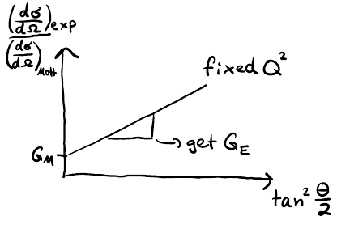
\frac{d\sigma}{d\Omega} = \left(\frac{d\sigma}{d\Omega}\right)_{\text{Mott}} \left[ \frac{G_E^2+\tau G_M^2}{1+\tau} + 2\tau G_M^2 \tan^2\frac{\theta}{2} \right],
where G_E and G_M are the electric and magnetic form factors. The form factors determine the differential cross section and relate to the charge distribution and magnetic moment. The experimental values at Q^2=0 are
| Form factor | Value |
|---|---|
| G_E^p(0) | 1 |
| G_M^p(0) | 2.79 |
| G_E^n(0) | 0 |
| G_M^n(0) | -1.91 |
We also introduced the quark model; next time we will calculate the magnetic moment in that framework.
The magnetic form factor at Q=0 directly gives the magnetic moment. The non‑zero neutron magnetic moment and the deviation of the proton’s g ‑factor from 2 are direct evidence for internal structure.